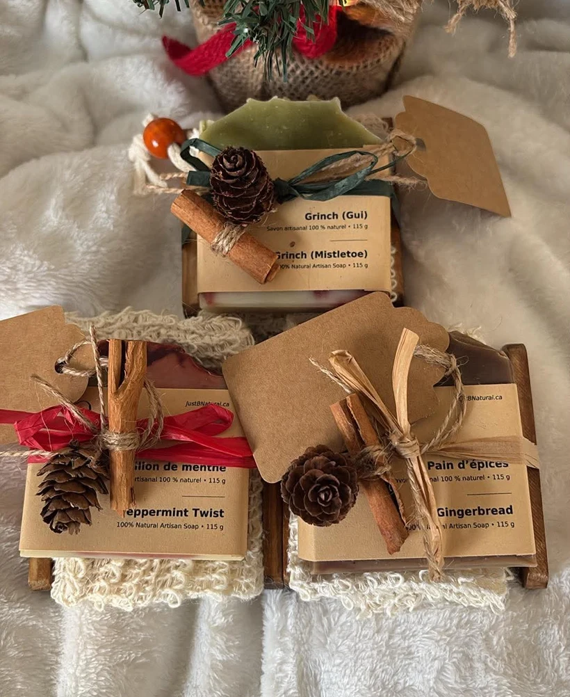

Handcrafted in Gatineau, Québec
A Little Thank You

One artisan soap, an all-natural sisal bag and a bamboo soap dish. A ready-to-give thank-you for teachers, hosts and stockings.
Handcrafted in Gatineau, Québec

One artisan soap, an all-natural sisal bag and a bamboo soap dish. A ready-to-give thank-you for teachers, hosts and stockings.